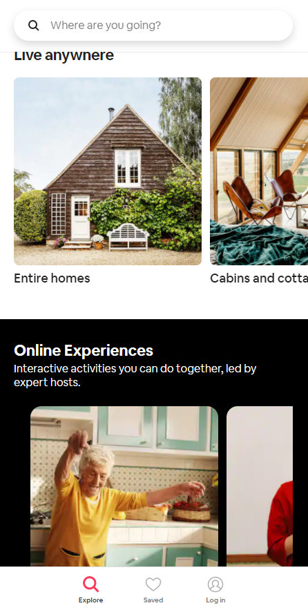
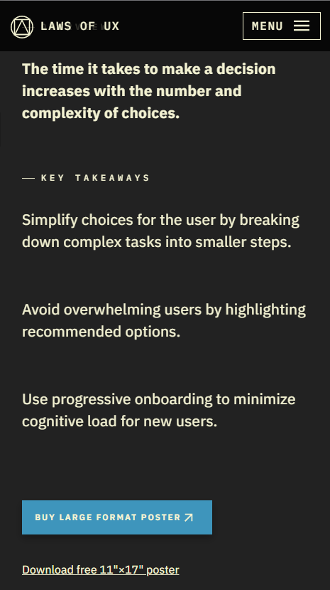

Fitt's Law
Airbnb
airbnb.com Fitt's Law says that the time it takes a user to click an item depends on (a) the distance between the button and the pointer, and (b) the size of the button.
Airbnb has customized their website to have few buttons with little area to miss. You can see the search bar above with nothing beside it, the menu below with only three buttons and space to tab.
Their choice to place the small menu bar at the bottom also makes it closer to the thumb, which most of us use more than any other finger on the screen.
Hick's Law
LAWS OF UX
lawsofux.com Reaction time increases with the number of options and the complexity of those options.
LAWS OF UX has one of the cleanest websites I know. Their menu is a simple list with many items, each laws of UX design, but they are as simple as can be. The rest of the website is spaced out, labelled sections and a few simple buttons. It makes for low complexity and few choices.
Rule of Thirds
Boosted USA
boostedusa.comWebsites are more aesthetically pleasing when parts of the UI are aligned to thirds of the frame.
Boosted USA divides their mobile website into thirds from top to bottom, creating an interesting website without a cluttered look. The top third holds notifications, the menu, and a photo (displaying 3 products lined up), the middle holds product links, and the bottom a nice black with mentions from magazines. Even the colors are balanced by where the eye focuses naturally.